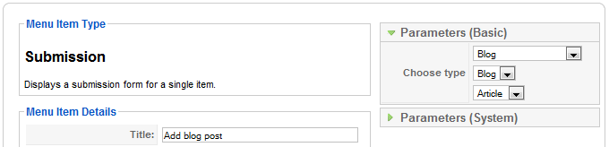

This tutorial will walk you through the process of setting up a Frontend Submission form.
In this tutorial we'll show you how to set up the frontend submission for a blog article. Only authors should be allowed to post submissions or blog entries.
Basically there are only three steps needed to accomplish this task:
This step is basically creating the submission form itself. Choosing what information should be submitted and what information is inevitable. You can think of this step as the form building. Now for the blog entry. We'll need a Subtitle, a Text, a Teaserimage, an Image for the full view, the socialbookmarks element and finally some related items (articles).
Go to the Zoo administration and choose the app manager (little gear icon in the menu). Then choose your app, in this case the blog app. Finally select one of the submission layouts for the article type and the default template. Read {doc: assign-elements-to-layout-positions text: this tutorial} on how to assign elements to layouts in general. You can only assign submittable elements. Each submittable element will have custom settings. Here you can define whether your element is required or not, or if an alternative label should be displayed. All the elements you have assigned here, will be submittable later on. Go ahead and assign the above mentioned elements.

After having build the submission form in the previous step, we'll now define the submission itself. Head on over to your blog application instance and go to submissions. Here we'll create a new submission by clicking on the new button in the top right corner.

There are a few settings we'll need to configure here. First of all, we'll give our submission a name, so that we'll be able to recognize it later on. Lets call it Blog. We'll then set it to be published and you can then choose if you would like element tooltips displayed for your users.
Now we need to define the security settings. We only want authors to be able to submit blog posts. Therefore we choose the access level special. Because the do trust our authors to know what they are doing, we enable the trusted mode. Which lets them submit HTML code and also choose related articles.
Now it's time to assign our freshly created submission form from step 1 to its type. We assign the submission to the type Article. We can also assign a default category, where the submissions should be assigned to. In our case this is not needed as our authors can assign the categories themselves, as they are trusted users.

Alright, we have mastered the first two basic steps. The last thing we'll need to do is to create the menu item itself.
Okay, now we'll create a new menu item of the Submission type. Choose menuitem type Zoo and then choose the type submission. Give the menu item a name, for example Add blog post. Now choose the your blog application instance, then choose your submission Blog and finally the content type. In this case the article.
That's it, you have set up the frontend submission.
Now it would nice if your authors there able to edit their blog posts, right? That's easily accomplished too. Create another menu item, but this time we'll choose Zoo » Submission / Mysubmissions. Here you'll have to select your blog application instance again and also choose your submission again. Now you have created created a link to an overview, where your authors can review and edit their submission. Nice.